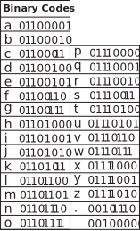
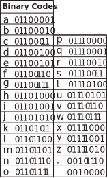

This work is made by Aarati Akkapeddi.
In 2022, while mourning my centenarian grandmother, I developed a program that translates text into Kolam designs using binary code as an intermediary. Kolam (or Muggu) is a traditional South Indian art form—rice flour drawings on the floor, traditionally practiced by women, comprising mathematically complex patterns with continuous intertwined lines. Through this translation process, I trace connections between kolams, gender, and computation, honoring computational lineage outside Western patriarchal academic frameworks. My initial work developed a matrilineal mourning ritual, translating the names of three generations of women into kolams: Swarajyalaxmi (my grandmother), Kameswaramma (her mother), and Rajyalaxmi (her grandmother). At transmediale, I use this system to draw kolams with rice flour and turmeric, each containing encrypted messages visitors can decode on this website, where they can also encode their own kolams.
 
key (note this key only shows latin characters but there are binary translation charts available online for non-latin scripts as well):
To encode text into Kolam designs, I first translate each character into eight-digit binary codes (made from only 0s and 1s). I then use an algorithm to map this translation onto a diamond-shaped matrix of dots. The algorithm moves top to bottom and left to right, drawing loops on each dot that correspond with either 0 or 1 according to the binary code translation of the text. The algorithm connects these loops, making sure to never connect loops associated with “0” to those associated with “1”. The center of the matrix contains blank padding space, allowing the entire pattern to be distributed evenly on the matrix, preserving the perfect square/diamond shape.
example with english:
example with telugu:
References/Further Readings:
- Dr. Gift Siromoney
- Science Friday: Write Your Name in Binary code
- Lavannya Suressh
- The Kolam Tradition: A tradition of figure-drawing in southern India expresses mathematical ideas and has attracted the attention of computer science by Marcia Ascher
- Kolam: Floor Art of Tamil Nadu